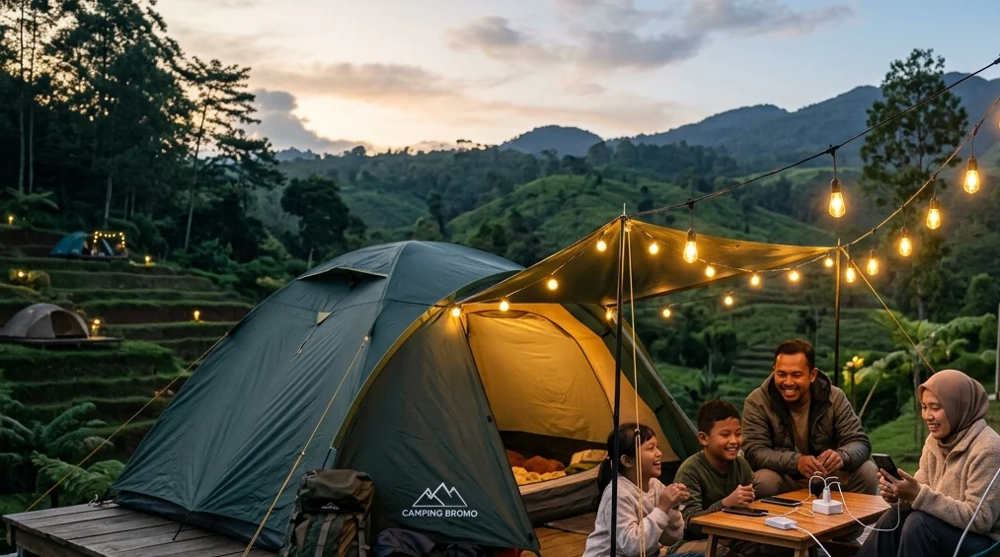

.webp) Evolusi area perkemahan modern kini sangat memprioritaskan sanitasi yang higienis dan kemudahan akses kelistrikan bagi para pengunjungnya. (Ilustrasi: Unsplash)
Evolusi area perkemahan modern kini sangat memprioritaskan sanitasi yang higienis dan kemudahan akses kelistrikan bagi para pengunjungnya. (Ilustrasi: Unsplash)
Banyak orang menunda keinginan untuk kembali ke alam karena dibayangi oleh stigma masa lalu: tidur yang tidak nyaman, udara malam yang menusuk tulang, tidak ada tempat untuk buang air yang higienis, dan terputus total dari peradaban karena tidak ada pasokan listrik. Namun, buang jauh-jauh bayangan buruk tersebut. Kini, industri ekowisata di dataran tinggi telah bertransformasi secara radikal untuk menjawab semua kebutuhan masyarakat modern.
Saat Anda melakukan pencarian panjang dengan kata kunci Area Kemah Batu dengan Colokan Listrik dan Sewa Ground Camping dengan Toilet Bersih, Anda sebenarnya sedang mendefinisikan sebuah standar liburan era baru yang di dunia pariwisata dikenal sebagai Comfort Camping. Kota Batu, yang diberkahi dengan perbukitan tropis menawan dan suhu udara sejuk, telah mempersiapkan infrastrukturnya dengan sangat matang. Artikel ini akan membedah secara rinci mengapa fasilitas sanitasi dan akses kelistrikan menjadi sangat fundamental, serta bagaimana Anda bisa mendapatkan paket wisata all-in yang memanjakan tersebut tanpa harus menguras dompet Anda.
1. Transformasi Liburan Alam: Selamat Datang di Era Comfort Camping
Satu dekade yang lalu, aktivitas berkemah adalah domain eksklusif bagi anggota pramuka atau kelompok mahasiswa pecinta alam yang memang dilatih untuk bertahan hidup (survival) dengan kondisi seminimal mungkin. Mereka sanggup menggali parit di saat hujan badai, memantik api dari kayu bakar yang basah, dan buang hajat di sembarang tempat. Namun, pergeseran budaya liburan telah terjadi dengan pesat.
Masyarakat kota, mulai dari kalangan pekerja kreatif (digital nomad), pekerja kantoran yang mencari work-life balance, hingga keluarga muda, sangat membutuhkan ruang pelarian hijau untuk mengusir stres (burnout) tanpa harus mengikuti simulasi fisik yang menyiksa. Pergeseran inilah yang melahirkan konsep Comfort Camping. Pengelola lahan secara perlahan mulai menanamkan investasi besar-besaran untuk meratakan tanah berumput, menarik kabel instalasi dari jaringan PLN, hingga membangun sarana bangunan permanen di tengah hutan pinus. Alam kini bukan untuk ditaklukkan, melainkan untuk dinikmati dengan cara yang paling menenangkan.
2. Mengapa Memilih Area Kemah Batu dengan Colokan Listrik?
Mendambakan suasana kembali ke alam bukan berarti Anda harus memutus seluruh koneksi dengan dunia luar. Ketersediaan infrastruktur kelistrikan adalah fitur pembeda utama antara tempat kemah amatir dan pengelola lahan yang profesional.
Kebutuhan Daya untuk Gadget dan Dokumentasi
Bagi generasi masa kini, ketersediaan daya listrik adalah hal yang mutlak. Alam Kota Batu menyuguhkan pemandangan yang luar biasa indah, mulai dari lautan kabut di pagi hari hingga gemerlap lampu kota (city light) di malam hari. Tentu sangat disayangkan jika momen langka tersebut gagal diabadikan hanya karena baterai smartphone atau kamera Anda kehabisan daya. Memilih Area Kemah Batu dengan Colokan Listrik memastikan Anda tidak perlu lagi bergantung sepenuhnya pada kapasitas powerbank yang terbatas, dan memungkinkan Anda untuk merekam video time-lapse sunrise dengan durasi panjang tanpa rasa khawatir.
Menunjang Penggunaan Peralatan Camping Modern
Inovasi kelistrikan di area kemah telah mengubah total cara wisatawan beristirahat. Ketersediaan stop kontak listrik di samping tenda memungkinkan para tamu untuk dengan mudah memompa kasur angin (inflatable mattress) menggunakan pompa elektrik, menyalakan lampu hias gantung untuk mempercantik teras tenda, atau bahkan bagi keluarga yang membawa balita, listrik sangat berguna untuk menghidupkan alat penghangat botol susu portabel di tengah malam yang dingin. Beberapa lansia bahkan memanfaatkan aliran listrik ini untuk menyalakan alat bantu pernapasan ringan saat mereka tidur.
BACA JUGA (Keamanan Fasilitas):
3. Pentingnya Sewa Ground Camping dengan Toilet Bersih
Jika ada satu hal yang bisa menghancurkan suasana hati selama liburan di alam bebas, hal tersebut pasti berkaitan erat dengan buruknya fasilitas Mandi Cuci Kakus (MCK).
Standar Kebersihan dan Kenyamanan Keluarga
Mencari Sewa Ground Camping dengan Toilet Bersih adalah prioritas utama, terutama jika Anda membawa rombongan wanita atau anak-anak. Berbeda dengan area liar di puncak gunung, lokasi komersial di Batu kini telah membangun blok-blok sanitasi permanen. Dinding keramik yang mengkilap, kloset model duduk dengan sistem flushing yang higienis, serta keberadaan cleaning service yang rutin menyikat lantai menjadi tolok ukur kualitas layanan. Toilet yang wangi dan terang di malam hari akan menghapus rasa cemas anggota keluarga Anda saat harus buang air di waktu subuh.
Ketersediaan Fasilitas Air Hangat (Water Heater) di Pegunungan
Udara malam di lereng pegunungan Kota Batu kerap merosot tajam menyentuh belasan derajat Celcius. Pada kondisi seperti ini, mandi dengan air dingin alami gunung bisa memicu risiko kram otot. Sebagai inovasi brilian, tempat-tempat premium kini menyematkan fasilitas water heater (pemanas air) di dalam kamar mandi umum mereka. Hal ini memungkinkan para tamu untuk membersihkan diri dengan nyaman layaknya sedang bermalam di resort bintang lima.
4. Manfaat Mengajak Anak ke Tempat Camping Fasilitas Lengkap
Fasilitas yang memadai secara langsung berbanding lurus dengan kebahagiaan anak-anak selama berlibur.
Keamanan Ekstra untuk Si Kecil
Dengan adanya fasilitas penerangan listrik yang cukup di area komunal, anak-anak dapat bermain dengan aman tanpa risiko tersandung akar pohon di malam hari. Area yang dikelola profesional juga memiliki batas lahan yang jelas dan pos keamanan yang mencegah anak-anak bermain terlalu jauh hingga memasuki area hutan lebat.
Membangun Kedekatan Keluarga (Family Bonding)
Karena segala kebutuhan logistik dasar (seperti listrik dan toilet) sudah terpenuhi dengan baik, orang tua tidak perlu lagi menghabiskan waktu berjam-jam untuk mengurus pekerjaan kasar. Waktu luang yang tersisa ini dapat dialokasikan sepenuhnya untuk bercengkerama dengan anak, memanggang sosis di perapian, dan menikmati obrolan hangat.

Jalur instalasi yang rapi dan lahan parkir yang memadai memudahkan pengunjung untuk langsung menikmati fasilitas setibanya di lokasi. (Dokumentasi: Batu Sunrise Camp)5. Kemudahan Akses Kendaraan dan Hiburan Terpadu
Liburan dengan fasilitas yang komplit juga harus diimbangi dengan kemudahan transportasi dan ragam aktivitas di lokasi.
Jalur Aman untuk Mobil, Motor, dan Campervan
Perbukitan di Kota Batu menawarkan kontur tanah yang sangat bersahabat bagi Anda yang gemar melakukan road trip. Infrastruktur aspal makadam yang mulus memastikan bahwa mobil MPV keluarga, city car mungil, rombongan motor touring, atau bahkan modifikasi mobil campervan yang berdimensi besar dapat merapat langsung ke titik perkemahan. Anda bisa memarkirkan kendaraan persis di sebelah tanah lapang tempat tenda didirikan (konsep Park & Camp), sehingga proses bongkar muat (loading) koper, galon air, atau alat masak (nesting) menjadi sangat efisien.
Integrasi Pusat Pariwisata Alam Terpadu
Daya tarik kawasan Batu tidak pernah berdiri sendiri. Setelah Anda selesai beristirahat di tenda, area sekitarnya adalah episentrum pariwisata yang sangat kaya. Sangat mudah bagi rombongan wisatawan untuk menyisipkan aktivitas wisata alam, permainan fun games kelompok, atau bahkan menyewa armada Jeep berpenggerak 4x4 untuk berkeliling membelah rute tanah berlumpur di tengah hutan pinus. Integrasi dinamis ini menjadikan akhir pekan Anda sarat dengan pacuan adrenalin yang menyenangkan.
6. Batu Sunrise Camp: Solusi Lengkap Tanpa Repot
Jika Anda mencari satu lokasi yang sukses merangkum seluruh kriteria dari Sewa Ground Camping dengan Toilet Bersih dan Area Kemah Batu dengan Colokan Listrik Terlengkap secara sempurna, Batu Sunrise Camp adalah destinasi prioritas yang patut dituju. Area ini dikelola dengan orientasi pelayanan maksimal.
Pihak manajemen telah mendirikan deretan tenda double layer berbahan tebal yang siap Anda tiduri kapan pun. Instalasi jaringan kabel listrik ditarik secara profesional dengan sistem grounding yang ditutupi kotak pelindung anti-air, menjamin keamanan pengunjung dari risiko tersetrum. Selain itu, Anda mendapatkan akses eksklusif ke area fire pit untuk menyalakan api unggun komunal, dan tentunya suguhan panorama City Light Malang Raya yang menyala gemerlap tanpa terhalang apa pun di malam hari.
BACA JUGA (Efisiensi Biaya):
7. Tips Memaksimalkan Penggunaan Colokan Listrik di Tenda
Meskipun pihak pengelola telah memanjakan Anda dengan akses sanitasi dan kelistrikan yang melimpah, Anda tetap harus menjadi pengunjung yang menaati aturan keselamatan:
- Bawa Kabel Rol (Extension) Berkualitas: Stop kontak biasanya dipasang secara vertikal pada tiang penyangga yang berada di luar tenda demi keamanan. Bawalah kabel olor dengan spesifikasi SNI berukuran panjang 3 hingga 5 meter, agar Anda bisa menarik aliran listrik masuk ke dalam teras tenda dengan aman.
- Hindari Peralatan Berdaya Tinggi: Jangan egois dengan membawa alat elektronik pemanas seperti kompor induksi, rice cooker kapasitas besar, atau setrika. Lonjakan daya watt yang berlebihan dapat menyebabkan sekring sentral anjlok dan merugikan tenda di sebelah Anda.
- Waspada Embun Pegunungan: Pastikan seluruh kepala charger dan colokan kabel diangkat dari permukaan lantai atau diletakkan di atas meja kecil. Embun pagi yang merembes berpotensi menyebabkan korsleting ringan jika menyentuh sirkuit kabel yang diletakkan tergeletak sembarangan di tanah.
8. Kesimpulan
Kemewahan sejati dari liburan modern adalah kemampuan Anda untuk menyatu kembali dengan keasrian alam tanpa harus membuang kebutuhan dasar akan kebersihan tubuh dan kelancaran komunikasi. Memilih Sewa Ground Camping dengan Toilet Bersih dan Area Kemah Batu dengan Colokan Listrik Terlengkap adalah investasi waktu yang sangat logis bagi Anda yang memiliki jadwal padat dan mengutamakan quality time bersama keluarga. Dengan menyerahkan urusan fasilitas kepada pengelola berstandar VIP seperti Batu Sunrise Camp, Anda bisa mendatangi lokasi tanpa lelah, memastikan baterai ponsel selalu terisi penuh untuk memotret sunrise, membersihkan diri dengan guyuran air hangat, dan merengkuh tidur yang amat pulas di bawah selimut bintang. Inilah esensi liburan yang menyembuhkan.